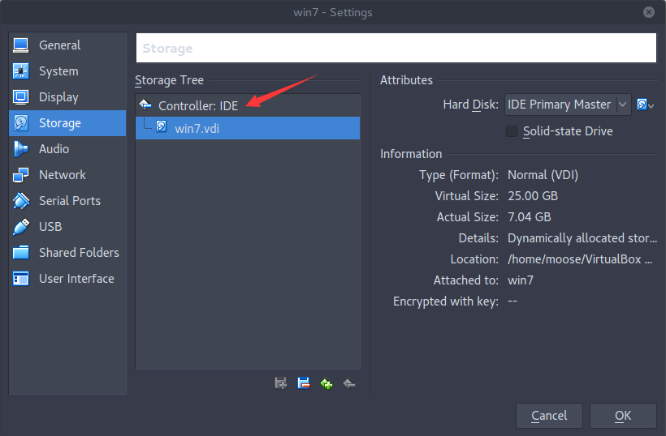
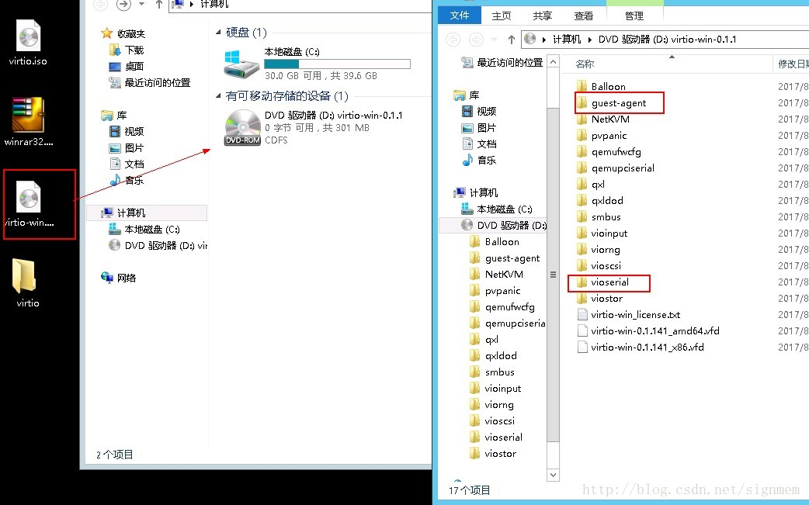

VMware虚拟机
Windows-XP
前置要求
- 安装系统虚拟磁盘存储方式为 ”单个文件”
- 安装系统虚拟磁盘类型为IDE， 若为其他，如SATA，需要手动修改为IDE
- 修改MTU值为1450
- 执行MergeIDE.bat文件,
- 关闭防火墙或放开防火墙3389端口
- 打开远程桌面，并确认是否允许无密码登录
- 释放IP配置
导入参数
- 磁盘控制器类型 ide
- 虚拟网卡型号 rtl8139
Windows-7 && Windows Server 2008
前置要求
- 安装系统虚拟磁盘存储方式为 ”单个文件”
- 安装系统虚拟磁盘类型为IDE， 若为其他，如SATA，需要手动修改为IDE
- 修改MTU值为1450
- 关闭防火墙或放开防火墙3389端口
- 打开远程桌面，并确认是否允许无密码登录
- 释放IP配置
导入参数
- 磁盘控制器类型 ide
- 虚拟网卡型号 rtl8139
kali
前置要求
- 安装系统虚拟磁盘存储方式为 ”单个文件”
- 安装系统虚拟磁盘类型为IDE， 若为其他，如SATA，需要手动修改为IDE
- 关闭防火墙或放开防火墙3389端口
- 关闭防火墙或放开防火墙22端口
导入参数
- 磁盘控制器类型 ide
- 视频图像驱动 vga
其他linux
前置要求
- 安装系统虚拟磁盘存储方式为 ”单个文件”
- 安装系统虚拟磁盘类型为IDE， 若为其他，如SATA，需要手动修改为IDE
- 关闭防火墙或放开防火墙3389端口
- 关闭防火墙或放开防火墙22端口
导入参数
- 磁盘控制器类型 ide
Virtualbox虚拟机
Windows-XP
前置要求
- 安装系统虚拟磁盘类型为IDE， 若为其他，如SATA，需要手动修改为IDE
- 修改MTU值为1450
- 执行MergeIDE.bat文件,
- 关闭防火墙或放开防火墙3389端口
- 打开远程桌面，并确认是否允许无密码登录
- 释放IP配置
导入参数
- 磁盘控制器类型 ide
- 虚拟网卡型号 rtl8139
Windows-7 && Windows Server 2008
前置要求
- 安装系统虚拟磁盘类型为IDE， 若为其他，如SATA，需要手动修改为IDE
- 修改MTU值为1450
- 关闭防火墙或放开防火墙3389端口
- 打开远程桌面，并确认是否允许无密码登录
- 释放IP配置
导入参数
- 磁盘控制器类型 ide
- 虚拟网卡型号 rtl8139
kali
前置要求
- 安装系统虚拟磁盘类型为IDE， 若为其他，如SATA，需要手动修改为IDE
- 关闭防火墙或放开防火墙3389端口
- 关闭防火墙或放开防火墙22端口
导入参数
- 磁盘控制器类型 ide
- 视频图像驱动 vga
其他Linux
前置要求
- 安装系统虚拟磁盘类型为IDE， 若为其他，如SATA，需要手动修改为IDE
- 关闭防火墙或放开防火墙3389端口
- 关闭防火墙或放开防火墙22端口
导入参数
- 磁盘控制器类型 ide
KVM虚拟机
Windows-XP
前置要求
- 安装系统需要手动指定虚拟硬盘、网卡模式为virtio，并加载virtio驱动文件
- 修改MTU值为1450
- 关闭防火墙或放开防火墙3389端口
- 打开远程桌面，并确认是否允许无密码登录
- 释放IP配置
Windows-7 && Windows Server 2008
前置要求
- 安装系统需要手动指定虚拟硬盘、网卡模式为virtio，并加载virtio驱动文件
- 修改MTU值为1450
- 关闭防火墙或放开防火墙3389端口
- 打开远程桌面，并确认是否允许无密码登录
- 释放IP配置
kali
前置要求
- 安装系统需要手动指定虚拟硬盘、网卡模式为virtio，并加载virtio驱动文件
- 关闭防火墙或放开防火墙3389端口
- 关闭防火墙或放开防火墙22端口
导入参数
- 磁盘控制器类型 ide
- 视频图像驱动 vga
其他Linux
前置要求
- 安装系统需要手动指定虚拟硬盘、网卡模式为virtio，并加载virtio驱动文件
- 关闭防火墙或放开防火墙3389端口
- 关闭防火墙或放开防火墙22端口
导入参数
无
虚拟机设置方法
- VMware 单个文件磁盘存储
- VMware 设置虚拟磁盘控制器类型
- ViturlBox设置虚拟磁盘控制器类型
- Windows-XP 设置MTU
- Windows-7 设置MTU
- Windows配置用户自动登陆
- Windows-Server-2008 设置MTU
- Windows 释放IP配置
- Windows 关闭防火墙
- Windows-XP 远程桌面
- Windows-7 远程桌面
- Windows-Server-2008 远程桌面
- Windows安装qemu-guest-agent插件
- Windows server 2008/2012 解除密码复杂度限制
- 验证qemu-guest-agent是否安装成功
- Linux配置开放端口
- Windows配置开放端口
- Windows允许无密码远程登录
- Windows XP加载virtio驱动
- Windows 7/2008/2012 加载virtio驱动
- Windows xp/2003安装cloudbase-init
- Linux安装qemu-guest-agent插件
- Linux允许root远程登录
- Linux允许无密码登录
VMware 单个文件磁盘存储
安装系统虚拟磁盘存储方式为 ”单个文件”
如当前为多文件转换方法(转换前需要删除虚拟机快照)
vmware-vdiskmanager.exe -r 需要转换的源文件.vmdk -t 0 需要转换的目标文件.vmdk
VMware设置虚拟磁盘控制器类型
ViturlBox设置虚拟磁盘控制器类型


Windows-XP 设置MTU 方法1在部分虚拟机中找不到该项配置
- 方法1
-
方法2
- 按Win+R组合键，调出“运行”菜单，输入regedit，然后回车；
- 选择“HKEY_Local_Machine>SYSTEM>CurrentControlSet>Services>Tcpip>Parameters>interface”；
- 在 interface 中下可能有很多项，需要逐个观察键值，会有一个项与你的网卡IP一致，选中该项；
- 然后在该项上点击右键，选择“编辑>新建>DWORD值”，然后在右侧将其命名为“MTU”；
- 右键点击MTU，选择“修改”，在弹出的窗口中选择“十进制”，填入你得出的合理MTU值即可。
Windows-7 设置MTU
- 进入系统盘:\Windows\System32\找到cmd.exe，右键“以管理员身份运行”；
- 在出现的“命令提示符”窗口中输入“netsh interface ipv4 show subinterfaces”并回车来查看当前的MTU值
- 接下来输入“netsh interface ipv4 set subinterface “需修改的连接名” mtu=你得出的合理值 store=persistent”并回车即可 例如：“netsh interface ipv4 set subinterface “本地连接” mtu=1450 store=persistent”
Windows配置用户自动登陆
- 命令行执行 control userpasswords2
- 取消勾选，点击右下角的应用，弹出框，设置要自动登陆的用户设置密码
- 重启系统，查看用户是否自动登陆
Windows-Server-2008 设置MTU
- 进入系统盘:\Windows\System32\找到cmd.exe，右键“以管理员身份运行”；
- 在出现的“命令提示符”窗口中输入“netsh interface ipv4 show subinterfaces”并回车来查看当前的MTU值
- 接下来输入“netsh interface ipv4 set subinterface “需修改的连接名” mtu=你得出的合理值 store=persistent”并回车即可 例如：“netsh interface ipv4 set subinterface “本地连接” mtu=1450 store=persistent”
Windows 释放IP配置
- 运行cmd
- 执行命令 “ipconfig /release”
Windows 关闭防火墙
Windows-XP 远程桌面
Windows-7 远程桌面
- 允许任意版本请选择 RDP 模式
- 网络级别身份认证请选择 NLA 模式
Windows-Server-2008 远程桌面
- 允许任意版本请选择 RDP 模式
- 网络级别身份认证请选择 NLA 模式
Windows安装qemu-guest-agent插件
- 搜素文件系统中是否有virtio-win文件夹(如果没有则下载virtio-win,更多virtio版本请查看 )
- 找到virtio-win可以看到下图

- 先更新 virto-serail driver 更新 pci 简单通讯控制器 (使用 vioserail 目录中的驱动)
- 安装virto-serail driver (注意选择与系统版本对应的驱动 )
- 安装balloon pci 驱动 (注意选择与系统版本对应的驱动 )
- 安装guest-agent 驱动 (注意选择与系统版本对应的驱动 ) 根据系统版本(x64,x86) 双击virtio-win目录下的 guest-agent 目录下的 qemu-ga-x86.msi 或 qemu-ga-x64.msi进行安装 执行完毕之后，命令行执行services.msc查看相关服务状态,启动qemu-guest-agent VSS provider服务，并改为自启动
此时会发现，qemu-guest-agent服务没有启动，手动启动也会报错 1053：服务没有及时响应启动或控制请求。这个不用管，等到镜像做好之后给镜像加上metadata ,hw_qemu_guest_agent 为yes之后服务会正常自启动
Windows server 2008/2012 解除密码复杂度限制
- gpedit 打开本地组策略编辑器
- 选择计算机设置—windows 设置—安全设置—帐号策略—密码策略
- 第一个密码复杂度策略，将密码复杂度要求改为禁用
验证qemu-guest-agent是否安装成功
在openstack 上启动镜像实例，找到实例对应的domain
方法1:* 执行 virsh qemu-agent-command domain ‘{“execute”:”guest-ping”}’,如果返回{“return”:{}}则说明服务正常
方法2:* 执行 virsh set-user-password –domain domain–user user –password password ,如果返回“Password set successfully ”则说明插件安装正常
Linux配置开放端口
Iptables
vi/etc/sysconfig/iptables
-A INPUT -m state --state NEW -m tcp -p tcp--dport 3389 -j ACCEPT
Firewall
firewall-cmd --zone=public --add-port=3389 /tcp --permanent
Windows配置开放端口
- 打开防火墙高级设置
- 新建入站规则
- 选择端口
- 设置端口
Windows允许无密码远程登录
配置Windows组策略
Windows XP加载virtio驱动
- 安装时指定硬盘、网卡模式为virtio，并加载virtio驱动文件
- 系统启动时，点击F6加载第三方驱动
- 选择对应版本的驱动程序（WinXP），点击“ENTER”之后继续安装系统
Windows 7/2008/2012 加载virtio驱动
- 安装时指定硬盘、网卡模式为virtio，并加载virtio驱动文件
- 安装过程中在选择硬盘驱动器时点击“加载驱动程序”
- 点击“确定”后选择系统对应的驱动程序，“下一步”之后即可看到一块未分配的硬盘

Windows xp/2003安装cloudbase-init
Windows XP 和Windows server 2003默认不支持cloudbase-init,在安装时需要更改一些设置
-
编辑C:\Program Files\Cloudbase Solutions\Cloudbase-Init\Python\Lib\site-packages\serial\win32.py ，注释掉包含’CancelIOEx’的三行。
-
删除cloudbase-init服务 sc delete cloudbase-init
-
导入注册表文件（或者手动添加），内容为： Windows Registry Editor Version 5.00
[HKEY_LOCAL_MACHINE\SOFTWARE\Microsoft\Windows\CurrentVersion\Run] “Cloudbase-init”=”"C:\Program Files\Cloudbase Solutions\Cloudbase-Init\Python\Scripts\cloudbase-init.exe" –config-file "C:\Program Files\Cloudbase Solutions\Cloudbase-Init\conf\cloudbase-init.conf"“
- 删除注册表子建： 检查注册表HKLM/Software/Cloudbase Solutions/Cloudbase-Init/下面是否有子键，有就删掉，否则新虚拟机启动时Cloudbase-init认为已经执行过，不再执行
Linux安装qemu-guest-agent插件
kali和ubuntu上
- 执行命令 sudo apt-get install qemu-guest-agent安装插件
- systemctl enable qemu-guest-agent设置插件自启动
- systemctl start qemu-guest-agent 启动服务
centos上
- 执行命令 yum install -y qemu-guest-agent安装插件
- systemctl enable qemu-guest-agent设置插件自启动
- systemctl start qemu-guest-agent 启动服务
Linux允许root/无密码远程登录
配置/etc/ssh/sshd_config 文件配置项
PermitEmptyPasswords no
PasswordAuthentication yes
PermitRootLogin no